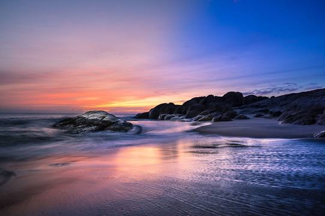

Arugam Bay Beach

Arugam Bay, known locally as "Arugam Kudah", is situated on the Indian Ocean in the dry zone of Sri Lanka's southeast coast, and a historic settlement of the ancient Batticaloa Territory. The bay is located 117 kilometres south of Batticaloa, 320 kilometres due east of Colombo, and approximately 4 kilometres south of the market town of Pottuvil. The main settlement in the area, known locally as Ullae, is predominantly Muslim, however there is a significant Sri Lankan Tamil and Sinhala population to the south of the village, as well as a number of international expatriates, largely from Europe and Australia. While traditionally fishing has dominated the local economy, tourism has grown rapidly in the area in recent years. Arugam Kudah's literal Tamil translation is "Bay of Cynodon dactylon". Tourism in Arugam Bay is dominated by surf tourism, thanks to several quality breaks in the area, however tourists are also attracted by the local beaches, lagoons, historic temples and the nearby Kumana National Park
Kanniya Hot Springs

The Kanniya Hot Springs is a site with hot wells located in Trincomalee, Sri Lanka. There are seven wells in a square shape. Wells are only 3–4 feet deep and you can clearly see the bottom. The temperature is considerably high but vary slightly from one spring to another. Wells run out of water, when 10-15 buckets of water are taken out.
Kalkudah Beach

Just a few kilometres from Pasikuda Bay lies Kalkudah beach, a 4km long stretch of sand that is the vision of serenity. Kalkudah beach is the less-frequented neighbour of Pasikuda Bay, providing much the same experiences as the latter. The unblemished sandy slice of paradise wasn’t always so. Back when the Tsunami hit in 2004, Kalkudah beach took quite the beating. After many years, it has been restored to its former glory, and now offers soft sands and glassy waters. Unlike Pasikuda Bay, it’s much quieter at Kalkudah, and also a bit more remote, without nearly as many stalls, so if you’re dropping by, make sure to come prepared with any refreshments lest you wonder a tad too far from the nearest store.
Pottuvil point
Popular beach for surfing & swimming
Eco Park

Located in Palanmeenmadu island in Batticaloa Lagoon, this Eco Park is a popular attraction among locals. The Batticaloa lagoon is 56 kilometers long and about 200 meters wide, it is a partly enclosed area with approximately 11,500 ha of area. Palanmeenmadu is one of the eight islands in the lagoon. You can take a boat across the lagoon to reach the eco park.